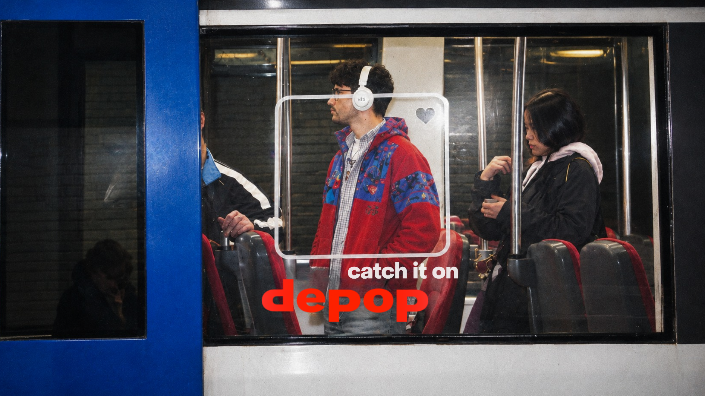

concept + strategy + visuals
DEPOP — spec campaign
The metro is fast, urban, and sustainable, just like Depop.
Or what it aspires to be.


Depop is a peer-to-peer marketplace to buy, sell and discover secondhand fashion. What they're missing is a direct line to the young, urban community that already fits that identity.
We found that in the Netherlands, 80% of young people rely on public transport.
While waiting, most people are glued to their phones. The only moment they do look up is when the metro arrives.
And that's the moment we'd grab their attention and link it directly to Depop.
By putting stickers on the metro windows, we'd frame every outfit as a potential Depop buy or sell. Next to that we'd add a reverse image search feature in the Depop app. The easier it is to find, the easier it is to buy.